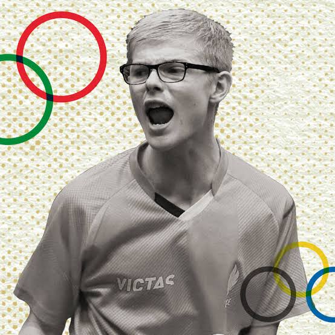

Félix Lebrun

Félix Lebrun, le prodige de tennis de table français. À seulement 20 ans, le Montpelliérain s'est imposé parmi les meilleurs joueurs de la planète grâce à son jeu ultra-rapide et sa célèbre prise "porte-plume".
Double médaillé de bronze aux JO de Paris 2024 et sacré Champion d'Europe en 2026 [0.1.1, 0.1.2], il incarne le renouveau du ping-pong tricolore.
Pour pouvoir suivre son parcours, vous pouvez vous rendre sur : le parcours du jeune prodige.
Pour ses réseaux, visitez :
Instagram,
TikTok,
X (Twitter).
Bilal (Rebeudeter)

De ses tweets viraux aux plus grandes scènes du web français, Rebeudeter (Billy) s'est imposé comme un maître du divertissement. Streamer généreux et créateur de concepts marquants (Radio Deter, DTR Fight), il fédère une immense communauté grâce à son humour spontané et son franc-parler.
Visionnez son contenu sur :
Twitch,
YouTube,
TikTok.
CeCe Winans

Reconnue comme l'artiste féminine de gospel la plus récompensée de tous les temps [0.1.8], CeCe Winans incarne l'excellence musicale et l'authenticité spirituelle. Révélée dans les années 1980 aux côtés de son frère BeBe, cette native de Détroit mène depuis une brillante carrière solo, mêlant gospel traditionnel, soul et R&B.
Forte de 18 Grammy Awards [0.1.8] et d'innombrables succès internationaux, elle continue d'inspirer toutes les générations.
Pour ses actualités, vous pouvez regarder : son site officiel.
Pour ses réseaux :
Instagram,
TikTok,
YouTube.